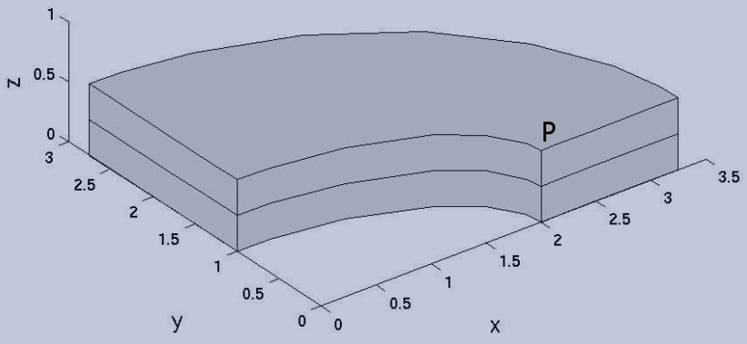
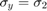
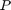
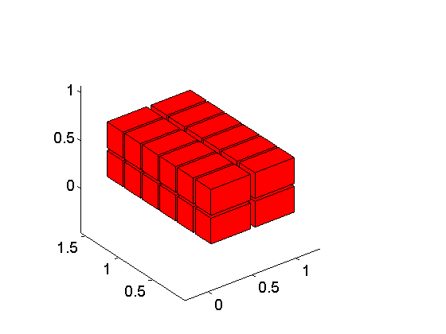
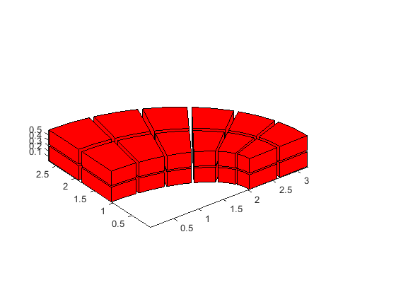
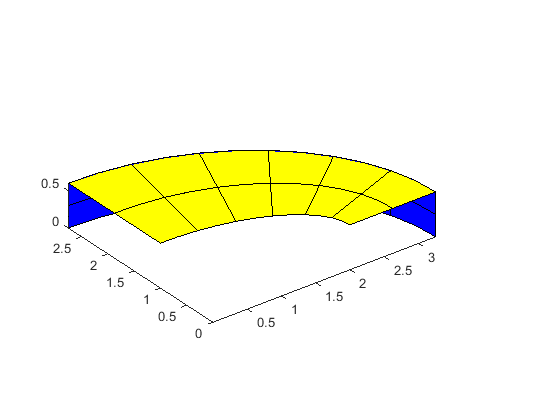
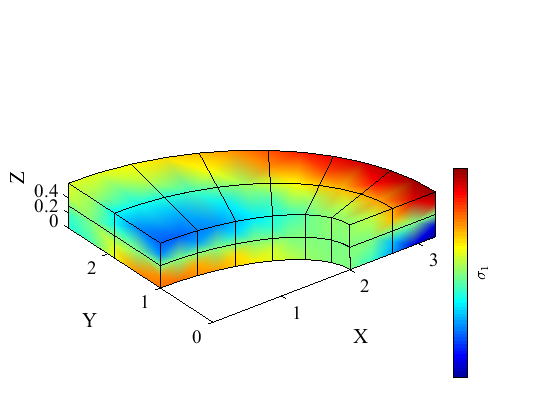

Transverse deflection of elliptical plate with elliptical hole
Contents
Link to the m-file.
Description
Thick elliptical plate with an elliptical hole is clamped on its exterior boundary and is loaded with transverse pressure. This is a NAFEMS Benchmark, Test No. LE10.
The plate is discretized with solid elements. Because of the symmetries of the geometry and load, only quarter of the plate is modeled.
|  |
| Figure 1. Definition of the geometry of the thick elliptical plate |
The  at the point  is to be determined. Since the target point is on the boundary of the domain it will not be an integration node as we use Gauss quadrature. The reference value is -5.38 MPa.
Solution
function pub_LE10NAFEMS
pu=physical_units_struct;
Define the material properties.
E = 210e3*pu.MEGA*pu.PA;
nu = 0.3;
rho= 8000*pu.KG/pu.M^3;
The geometrical parameters:
Ae =3.25*pu.M;% Major radius of the exterior ellipse Be =2.75*pu.M;% Minor radius of the exterior ellipse Ai =2.0*pu.M;% Major radius of the interior ellipse Bi =1.0*pu.M;% Minor radius of the interior ellipse t =0.6*pu.M;% thickness of the plate tol=t/100;% geometrical tolerance
The applied pressure on the top face is
qmagn=1*pu.MEGA*pu.PA;
The chosen mesh parameters.
nr = 2;% number of elements radially nc = 6;% number of elements circumferentially nt = 2;% number of elements through the thickness
The mesh is generated first in the XY plane as a block. The first coordinate is normalized thickness, the second coordinate is angular.
[fens,fes]=Q4_block(1.0,pi/2, nr, nc, struct('other_dimension',1.0));
The rectangle is next extruded in the Z direction by the thickness. Note that the extrusion function simply adds the third dimension to the coordinates of the nodes which are at this point in the Cartesian coordinates XY.
Check that the number of elements through the thickness is an even number, the application of the boundary conditions relies on it.
nt=round(nt*2)/2;
Extrude the quadrilaterals into hexahedra.
[fens,fes] = H8_extrude_Q4(fens,fes,nt,@(x,i)([x,0]+[0,0,t*i/nt]));
The mesh looks like this at this point:
drawmesh({fens,fes},'fes','facecolor','r','shrink', 0.9);
 Now we are going to convert the mesh to the element type we desire. Here we are going to use the 64-node hexahedron.
[fens,fes] = H8_to_H20(fens,fes);
At this point we will extract the boundary mesh.
bdry_fes = mesh_boundary(fes, struct('other_dimension', 1.0));
We will also select those finite elements are on the external elliptical boundary and those that are on the upper face of the plate. It is particularly easy because the mesh geometry is still a box.
exteriorbfl = fe_select(fens, bdry_fes, struct('box', [1,1,0,pi/2,0,t],'inflate',tol)); topbfl = fe_select(fens, bdry_fes, struct('box', [0,1,0,pi/2,t,t],'inflate',tol));
Now the geometry can be warped into the elliptical shape.
xyz=fens.xyz;
for i=1:count(fens)
r=xyz(i,1); a=xyz(i,2); z=xyz(i,3);
xyz(i,:)=[(r*Ae+(1-r)*Ai)*cos(a) (r*Be+(1-r)*Bi)*sin(a) z];
end
fens.xyz=xyz;
The geometry may be verified graphically.
drawmesh({fens,fes},'fes','facecolor','r','shrink', 0.9);
 We can also visualize the selected boundary faces.
gv=drawmesh({fens,subset(bdry_fes,exteriorbfl)},'fes','facecolor','b');
gv=drawmesh({fens,subset(bdry_fes,topbfl)},'gv',gv,'fes','facecolor','y');
 We are ready to bundle up the model data so they can be passed to the solver.
clear model_data model_data.fens =fens;% the finite element node set clear region region.fes= fes; region.rho =rho; region.E=E; region.nu=nu; region.integration_rule =gauss_rule(struct('dim',3, 'order',2)); model_data.region{1} =region;
The essential boundary conditions: The nodes on the symmetry planes are selected using box criteria.
clear essential essential.component= [1]; essential.fixed_value= 0; essential.node_list = fenode_select (fens,struct('box',[0,0,-inf,inf,-inf,inf],'inflate',tol)); model_data.boundary_conditions.essential{1} = essential; clear essential essential.component= [2]; essential.fixed_value= 0; essential.node_list = fenode_select (fens,struct('box',[-inf,inf,0,0,-inf,inf],'inflate',tol)); model_data.boundary_conditions.essential{2} = essential; clear essential essential.component= [1:2]; essential.fixed_value= 0; essential.node_list = connected_nodes (subset(bdry_fes,exteriorbfl)); model_data.boundary_conditions.essential{3} = essential; clear essential essential.component= [3]; essential.fixed_value= 0; essential.node_list = intersect(connected_nodes (subset(bdry_fes,exteriorbfl)),... fenode_select (fens,struct('box',[-inf,inf,-inf,inf,t/2,t/2],'inflate',tol))); model_data.boundary_conditions.essential{4} = essential; clear traction traction.fes =subset(bdry_fes,topbfl); traction.traction= [0;0;-qmagn]; traction.integration_rule =gauss_rule(struct('dim',2, 'order',4)); model_data.boundary_conditions.traction{1} = traction; % Solve model_data =deformation_linear_statics(model_data); Pn=fenode_select (fens,struct('box',[Ai,Ai,0,0,t,t],'inflate',tol)); model_data.u_scale=1000; model_data.stress_component=2; function observer(i, stressf,model_data) disp( ['Stress at P=' num2str( gather_values( stressf,Pn)/(pu.MEGA*pu.PA)) ' MPa']); end model_data.observer =@ observer; model_data.use_spr= true; model_data=deformation_plot_stress(model_data);
end